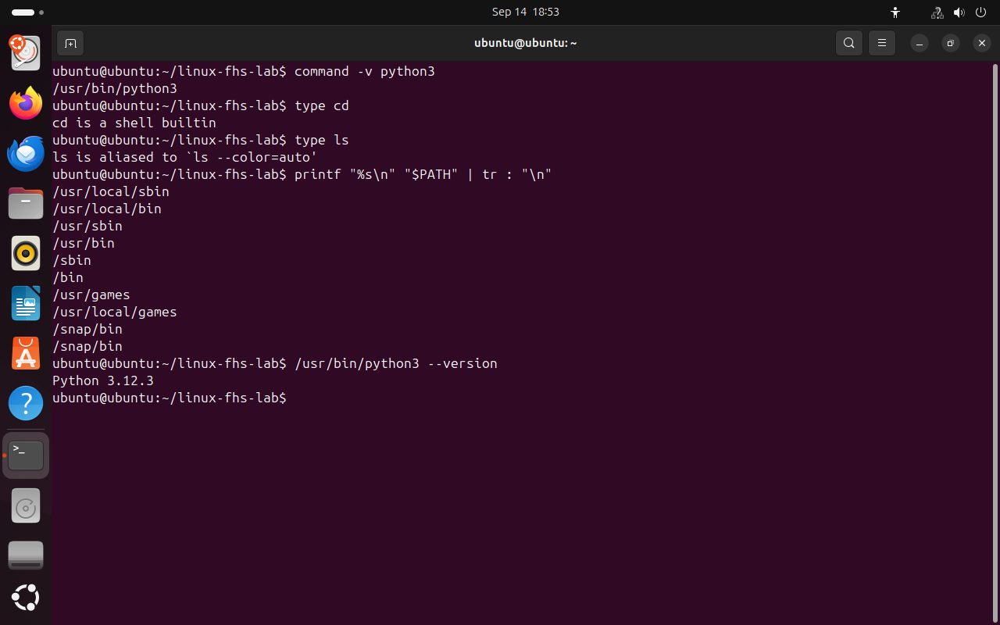
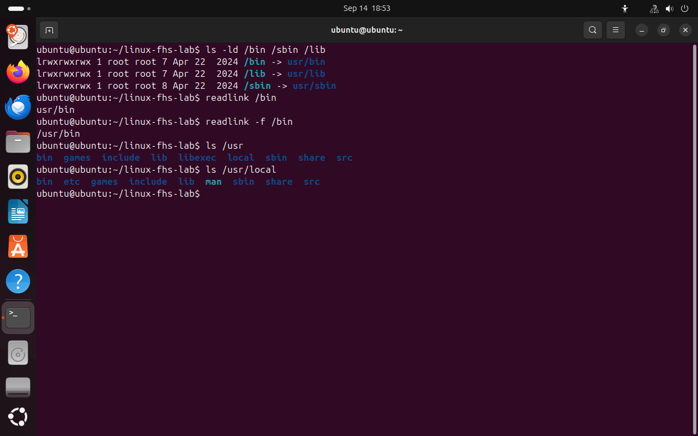

Часть 3 из 8
Где хранятся программы и как оболочка их находит
В этой части рассмотрим каталог /usr, переменную PATH, по которой оболочка ищет исполняемые файлы, и ссылки /bin, /sbin, /lib в современных дистрибутивах.
3.1 Каталог /usr
Программы, установленные менеджером пакетов, размещаются в /usr. Внутри него есть несколько подкаталогов с разным назначением. Исполняемые файлы для всех пользователей находятся в /usr/bin, программы администрирования и системные службы — в /usr/sbin, библиотеки — в /usr/lib, документация и другие общие данные — в /usr/share.
Программы, которые администратор устанавливает самостоятельно, без менеджера пакетов, принято размещать в /usr/local. Так они не смешиваются с файлами дистрибутива и не будут затронуты при его обновлении.
Пример. Если администратор скачал исходный код программы и собрал её сам, исполняемый файл кладут в /usr/local/bin. При обновлении Ubuntu менеджер пакетов этот каталог не трогает.
| Каталог | Содержимое |
|---|---|
/usr/bin | команды для всех пользователей |
/usr/sbin | программы администрирования и службы |
/usr/lib | библиотеки и служебные файлы программ |
/usr/share | документация, переводы, общие данные |
/usr/local | программы, установленные администратором вручную |
3.2 Поиск команды: переменная PATH
Чтобы запустить программу, достаточно ввести её имя, например python3, а не полный путь /usr/bin/python3. Оболочка находит исполняемый файл сама, используя переменную окружения PATH.
PATH можно сравнить со списком полок, которые вы по очереди осматриваете в поисках книги: нашли книгу на второй полке — остальные уже не проверяете. Пример. Команда python3 работает из любого каталога, потому что файл лежит в /usr/bin, а этот каталог есть в PATH. Скрипт hello.sh, созданный в домашнем каталоге, по короткому имени не запустится: домашнего каталога в PATH нет. Его запускают так: ./hello.sh.
По шагам выполнение команды выглядит так:
| Шаг | Что делает оболочка |
|---|---|
| 1 | читает введённую строку и делит её на имя команды, ключи и аргументы |
| 2 | проверяет, не псевдоним ли это; если да, подставляет вместо имени полную команду |
| 3 | проверяет, не встроенная ли это команда; встроенную, например cd, выполняет сама |
| 4 | ищет исполняемый файл по каталогам из PATH, слева направо |
| 5 | запускает найденную программу и передаёт ей ключи и аргументы |
| 6 | ждёт, пока программа завершится, и снова выводит приглашение |
Если в имени есть косая черта, например ./app или /usr/bin/python3, поиск по PATH не нужен: оболочка сразу запускает файл по указанному пути.
command -v python3# путь к найденному файлуtype cd# тип команды cdtype ls# тип команды lsprintf "%s\n" "$PATH" | tr : "\n"# каталоги PATH по одному в строке/usr/bin/python3 --version# запуск по полному пути
- 1файл программы python3
- 2встроенная команда оболочки
- 3псевдоним: ls выполняется с ключом --color=auto
- 4каталог, в котором найден python3
{kind=link}

Весь снимок ↗Разрешение имён команд и содержимое PATH.
Что показывает снимок. Оболочка показывает, чем является каждое имя: python3 — файл в /usr/bin, cd — встроенная команда, ls — псевдоним. Ниже выведен список каталогов PATH.
Где это пригодится. Если при вводе команды появляется сообщение «command not found», проверяют, установлена ли программа и есть ли её каталог в PATH. command -v показывает, какая именно программа запустится, если установлено несколько версий.
3.3 Ссылки /bin, /sbin и /lib
Исторически часть программ располагалась в /bin и /sbin, а часть — в /usr/bin и /usr/sbin. В современных дистрибутивах, в том числе в Ubuntu, все программы перенесены в /usr. Прежние каталоги /bin, /sbin и /lib сохранены в виде символических ссылок на соответствующие каталоги внутри /usr. Поэтому /bin/bash и /usr/bin/bash — один и тот же файл, а скрипты со старыми путями продолжают работать.
Пример. Многие скрипты начинаются со строки #!/bin/bash, которая указывает, какой программой выполнять скрипт. Благодаря ссылке /bin → /usr/bin такие скрипты работают, хотя сама программа bash лежит в /usr/bin.
ls -ld /bin /sbin /lib# сведения о самих ссылкахreadlink /bin# путь, записанный в ссылкеreadlink -f /bin# полный путь, на который указывает ссылкаls /usrls /usr/local# программы, установленные вручную
- 1
l— символическая ссылка - 2ссылка указывает на usr/bin
- 3полный путь цели
{kind=link}

Весь снимок ↗/bin, /lib и /sbin в Ubuntu являются ссылками на каталоги внутри /usr.
Что показывает снимок. /bin, /lib и /sbin — символические ссылки на каталоги внутри /usr.
Где это пригодится. Поэтому в инструкциях встречаются и /bin/bash, и /usr/bin/bash: оба пути ведут к одному файлу, и оба будут работать.
Итоги части 3
- Программы из пакетов хранятся в
/usr, установленные вручную — в/usr/local. - Оболочка ищет исполняемый файл по каталогам из переменной
PATHи запускает первый найденный. - Встроенные команды, такие как
cd, выполняет сама оболочка. - В Ubuntu
/bin,/sbinи/lib— ссылки на каталоги внутри/usr.
В отчётСнимок с command -v, type и выводом PATH.